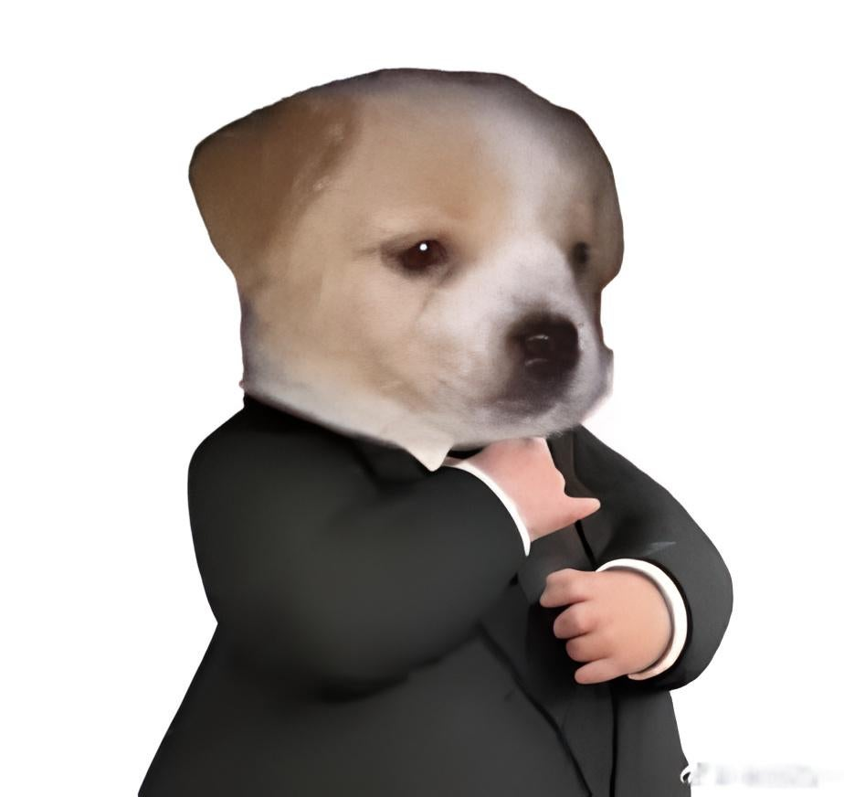

Director Principal de la Empresa

CEO de la Empresa
Secretario Principal
Bienvenido a MotoDreams, el sitio donde la pasión por las motocicletas cobra vida. Sumérgete en el mundo del motor con estilo, potencia y libertad sobre dos ruedas. Explora los modelos más icónicos, conoce sus detalles, y déjate inspirar por nuestra comunidad de amantes de las motos.
Ya seas principiante o todo un experto, aquí encontrarás la información, inspiración y emoción que buscas. ¡Súbete a la aventura con MotoDreams!